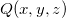
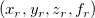
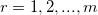
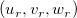
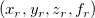
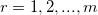
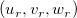
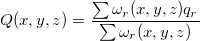
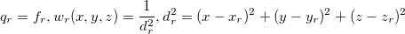

3D-Interpolation
Math-3D-Interp
Beschreibung
Diese Funktion führt die 3D-Interpolation einer Spalte von Werten (Vektor, abhängige Variable) durch, die mit einem Satz von XYZ-Streupunkten verbunden sind.
Um diese Funktion zu verwenden:
- Öffnen Sie ein neues Arbeitsblatt mit den X-, Y- und Z-Spalten (Daten), plus eine vierte Spalte mit Werten, von denen jede durch eine Zeilenindexnummer mit einem Satz von XYZ-Koordinaten verbunden ist.
- Aktivieren Sie das Arbeitsblatt.
- Wählen Sie Analyse: Mathematik: 3D Interpolation. Der Dialog interp3 wird geöffnet.
- Wählen Sie Ihre Eingabe- und Ausgabeoptionen und klicken Sie auf OK. Die X-Funktion interp3 wird aufgerufen, um die Berechnung durchzuführen.
Dialogoptionen
| Neu berechnen |
Bedienelemente zur Neuberechnung der Analyseergebnisse
Weitere Informationen finden Sie unter Analyseergebnisse neu berechnen.
|
| Eingabe |
Legen Sie den Eingabedatenbereich fest.
- X
- Wählen Sie eine X-Spalte.
- Y
- Wählen Sie eine Y-Spalte.
- Z
- Wählen Sie eine Z-Spalte.
- F
- Wählen Sie eine 3D-Funktionsspalte.
Hilfe zum Festlegen von Bereichen finden Sie hier: Eingabedaten festlegen
|
| Steuerung Berechnung |
Legt die Parameter für die interpolierten Punkte fest.
- Anzahl der Punkte in jeder Dimension
- Die Anzahl der interpolierten Punkte in jeder Dimension
- X-Minimum
- Legt den Wert für das X-Minimum dieser Interpolation fest.
- X-Maximum
- Legt den Wert für das X-Maximum dieser Interpolation fest.
- Y-Minimum
- Legt den Wert für das Y-Minimum dieser Interpolation fest.
- Y-Maximum
- Legt den Wert für das Y-Maximum dieser Interpolation fest.
- Z-Minimum
- Legt den Wert für das Z-Minimum dieser Interpolation fest.
- Z-Maximum
- Legt den Wert für das Z-Maximum dieser Interpolation fest.
|
| Ausgabe |
Das Ausgabeergebnis für diese interpolierten Daten.
|
Algorithmus
Diese Funktion erzeugt eine Glättungsfunktion , die einen Satz von /math-d6ab8f047463e20a55dc3c7a3c040b7c.png "m\!") Streupunkten  für  mit Hilfe einer Modifikation der Shepard-Methode interpoliert. Sie wertet dann die Interpolante für den Satz der ausgewählten Punkte  aus sowie ihre ersten partiellen Ableitungen. Die Oberfläche ist kontinuierlich und hat kontinuierliche erste Ableitungen.
Streupunkten  für  mit Hilfe einer Modifikation der Shepard-Methode interpoliert. Sie wertet dann die Interpolante für den Satz der ausgewählten Punkte  aus sowie ihre ersten partiellen Ableitungen. Die Oberfläche ist kontinuierlich und hat kontinuierliche erste Ableitungen.

wobei

Weitere Informationen zu Algorithmen finden Sie in der Dokumentation für diese NAG-Funktionen:
Referenzen
Weitere Referenzinformationen finden Sie in der Dokumentation für diese NAG-Funktionen: